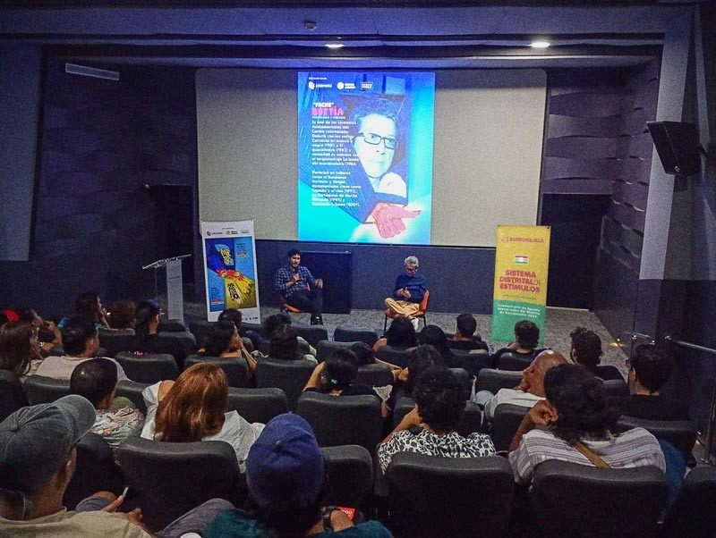

Fundación Cinerama Contracultural · Barranquilla
El Caribe crea. Cinerama conecta.
Una plataforma de gestión cultural, formación, exhibición y creación desde Barranquilla y el Caribe colombiano.
Una década de trabajo
Una trayectoria en datos.
Del cineclubismo a un festival internacional y una fundación que articula proyectos culturales.



Tres líneas de trabajo
Fundación Cinerama y sus líneas.
Proyectos que conectan educación, públicos, creación y producción.
Educación y Cultura ↗
Memoria, saberes, educación y cultura de paz.
Conocer la línea ↗Públicos y Audiencias ↗
Exhibición, cineclubismo y formación de públicos.
Conocer la línea ↗Creación y Producción ↗
Creación artística y producción audiovisual.
Conocer la línea ↗Proyecto principal
Mal de Ojo Festival Internacional de Cine
La tercera edición del festival tendrá lugar en diciembre de 2026 en Barranquilla.
Visitar Mal de Ojo ↗
Red de colaboración
Aliados.
Una red de espacios culturales, festivales, universidades, medios y organizaciones.
Personas
Equipo Cinerama.
Un equipo interdisciplinario que acompaña los proyectos de la Fundación.